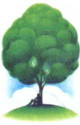

LAST LAUGH
In search of the perfect tree.
C'MON IN, THE SHADE'S FINE
I do not hold designer trees - Bradford pear, weeping cherry, crabapple, and the like - much in favor. They are nice, pretty to look at, but their shade is fleeting and you cannot rest your shoulders against their trunks.
I prefer trees that were planted before I was born - trees that I can lie beneath the live long summer day and not once be touched by the sun.
My friends return from vacations boasting of even tans, sunny beaches, and cloudless cruises. I return and would tell (if anyone would listen) of anonymous trees in whose shade I rested and pondered as lazy as a leaf
on a windless day "Disneyland was nice, but there was this live oak just outside my motel room and..." or "In London I saw this double row of magnificent horse chestnut trees near one of those palaces or something." I have a vacation goal: there is a saman tree on the campus of the University of the West Indies in Trinidad whose shade covers an area of more than half an acre!
Good shade trees are hard to find. Tidy gardeners do not like them. Large, leafy trees are usually dropping something unpleasant - twigs and insect pests, nuisance fruits, pods and seeds and sticky things - and they have to rake them up. (Autumn leaf disposal, a line item in the budgets of many cities, also discourages shade tree growers.)
Good shade trees interfere with overhead utility lines, cause concrete walks to bend and heave, and seek out water lines like divining sticks. When one is cut down, its massive underground trunk and root structure decays, slowly leaving a growing depression in an otherwise level lawn.
Good shade trees take decades to grow full-headed canopies, and most landscape designers plant for next season's garden club competition, not for the next generation's shade.
Good shade trees frighten insurance companies.
It is no wonder the dogwood is chosen over the oak, the redbud over the beech.
The requirements for a good shade tree are stringent.
These trees give shade but will not tolerate it. The best ones grow at the edges of forests or in the middle of meadows where farmers appreciate majesty over productive land (and a week's worth of tree clearing).
The trunk should not be so straight as to stiffen the neck when leaning against it. The roots should not be knobby and lumpy but should fit comfortably - as an Eames chair. The leaves should not be so dense as to preclude some ground covering. (Cathedral pines make fine shade, but cones and needles do not a bed of roses make.)
When a breeze stirs the leaves, they should, as Virgil wrote, "give tongue to the wind."
The leaves should be dark and heavy to absorb the sun's rays, and plentiful so the air is cooled as photosynthetic water vapor escapes the leaves, providing a microclimate that can be as much as 9 degrees cooler than the surrounding area.
These are the reasons you will find both the cows and me beneath a good shade tree.
I like to think that Nature invented leaves not for photosynthesis, but for us. Her first thoughts were to provide for the farmer a cool respite on a hot plowing afternoon; for the poet a rhyme - "A tree that may in Summer wear/A nest of robins in her hair"; for the child a shady spot for swinging; and, most assuredly, for me, simple pleasures.
Some people think leaves are common; there are so many. A Connecticut arborist calculated that a sugar maple sports 162,500 leaves; a mature American elm (if one can be found) as many as 5,000,000.
Find a leaf that has escaped cute caterpillars and homely bugs like mites, aphids, and inchworms; lace bugs, leafhoppers, and whiteflies; birch borers, leaf rollers, and weevils. Find a leaf without holes or ragged edges, free of fungus, cankers, and galls; a leaf without rusty orange spots or silvery white spots. Find a leaf free of scab and blight, scale and rot; one without an insect's winter home or its brooding larvae. If you find one, save it. And place it next to a single, perfect rose.
The best shade tree is the white ash. Here, I will hear arguments from the oak, beech, elm, maple, basswood, sycamore, honey locust, and horse chestnut crowds. But you can't beat sentiment. Forty years ago I helped my uncle plant a white ash in our backyard. There is something special about being present at the beginning, not noticing the length of its shade growing imperceptibly each year, and one morning walking out the backdoor and saying, "Hey, that's one magnificent tree."
I think the reason that I never really saw the tree until recently is that it was never a childhood companion. As a sapling it was graceful, but not sturdy enough even to mark second base. It grew stout, spreading branches, but not fast enough for me to use them for climbing and swinging and tree houses. When the trunk grew massive with deep, rugged diamond-shaped ridges, I was too old to use it in a game of hide-and-seek. Now it is just a tree - noble and stately - the handsomest tree within several city blocks, and it fits the curve of my back perfectly.
|
 |
|
|